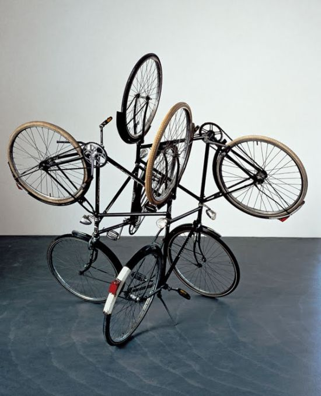
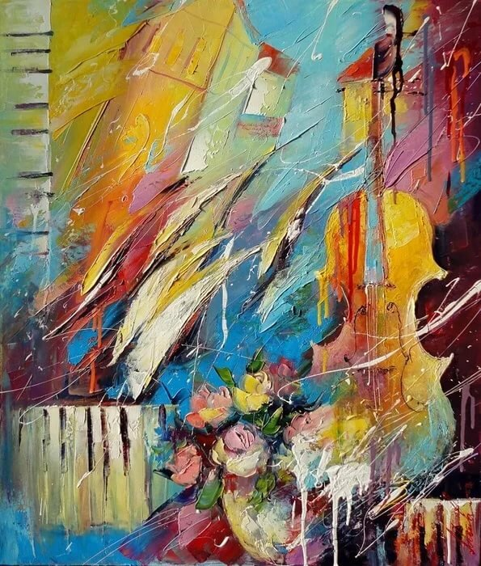
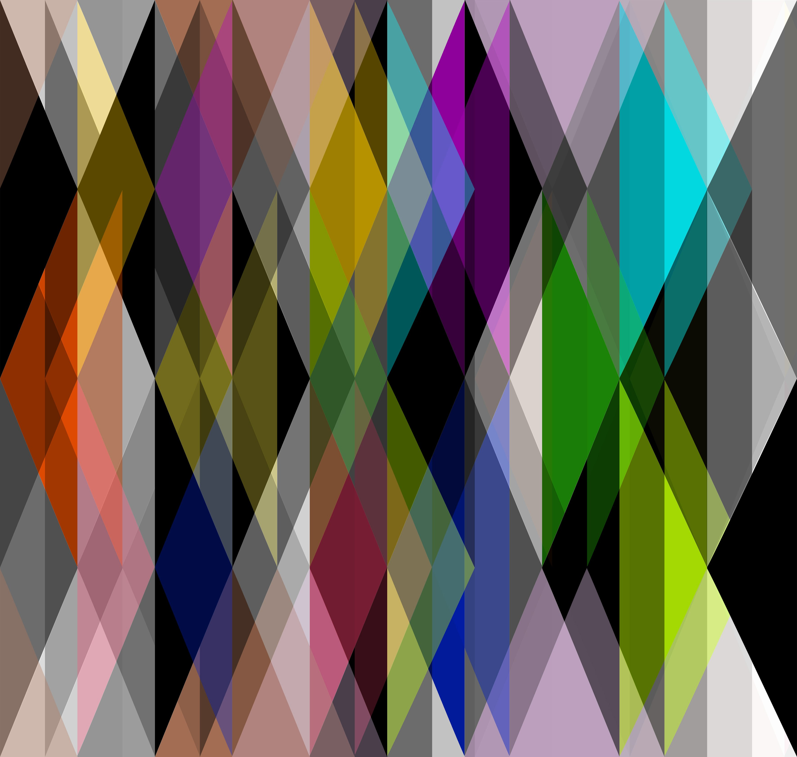
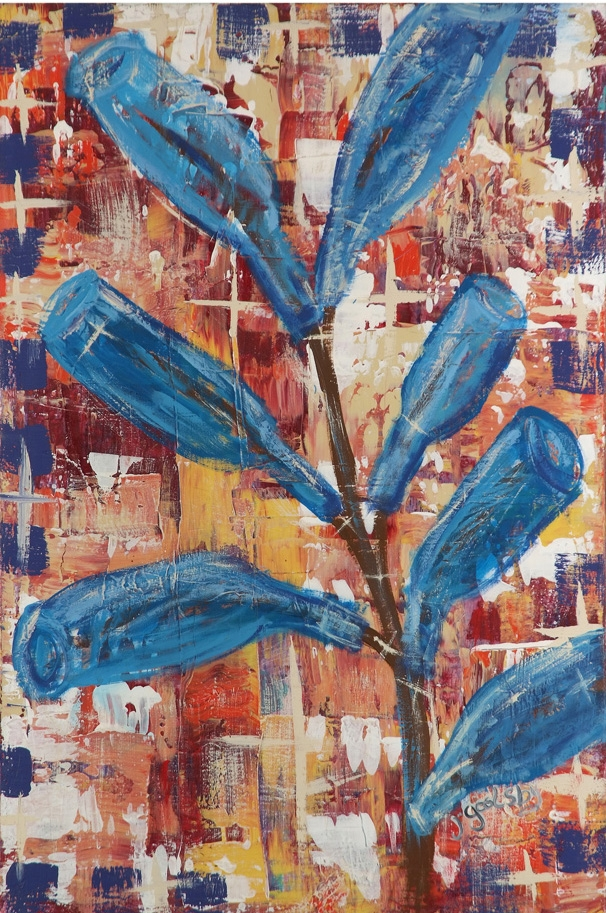

Концептуальное искусство (Концептуализм) – направление в искусстве обращающееся к интеллектуальному осмыслению произведения. Сам арт-объект здесь имеет своей целью передать ту или иную идею. При этом уровень непосредственно художественной реализации проекта не важен. Предпосылками для возникновения концептуального искусства можно считать редимейды Марселя Дюшана и аналитическую философию (идеи Л. Витгенштейна, Дж. Остина и др.). Впервые само словосочетание «Концептуальное искусство» встречается у Генри Флинта. Такое название он дал своему эссе 1961 года, в котором пытался объяснить и частично оправдать термин "Concept art" (не следует, однако, путать «Concept art» Г. Флинта с тем, что в настоящее время также называется концепт-артом, т.е. с этапом при разработке образов для компьютерных игр и фильмов). При этом английское слово «concept» здесь следует переводить на русский язык скорее как «идея» или «понятие». Т.о. для понимания того, что такое концептуальное искусство следует сказать, что на русский язык этот термин может быть переведен как «идейное искусство» или «понятийное искусство».
Постживописная абстракция (иногда хроматическая абстракция) – направление в абстракционизме, которое сформировалось в 1950-х годах как ответ на абстрактный экспрессионизм. Сам термин предложил Клемент Гринберг (Clement Greenberg) в 1964 году. Главной отличительной чертой здесь является монохромность, которая пришла на смену «сумбурному», эмоциональному экспрессионизму прошлой эпохи. Строгость и некая спокойность, аскетичность композиции здесь достигается при помощи использования простых фигур и четких краев. Отказ от художественного разнообразия абстрактной живопись в пользу меланхолично-созерцательного характера картин является поводом для того, чтобы рассматривать постживописную абстракцию как вид минимализма для «безобъектной», абстрактной живописи.
Геометрический абстракционизм (также геометрическая абстракция, холодная абстракция, логический абстракционизм) – достаточно широкое понятие, объединяющее под собой виды живописи, сочетающие в себе использование геометрических форм и абстрактной композиции. Исторически имеет свои корни в творчестве П. Сезанна и кубистов. Переход к живописи в данном жанре можно наблюдать в творчестве Пита Мондриана (эволюция образа дерева – см. ниже), который также сформулировал основные принципы данного направления: 1. Художник мыслит в живописи плоскостью; в архитектуре пустое пространство должно быть принято за «нецвет» (черный, белый, серый), а строительный материал - за цвет. 2. Необходимо равновесие, оно предполагает большую поверхность нецвета и маленькую - цвета. 3. Дуализм пластических средств требуется уже в самой композиции. 4. Равновесие достигается отношением положений и выражается прямой линией. 5. Равновесие, которое нейтрализует пластические средства, создается отношением пропорций.
Коллаж - художественное произведение, созданное путем наклеивания на некую основу различных объектов, которые отличаются по форме/материалу и т.д., но объединены тематически. Традиционно различают понятия «Коллаж» и «Коллажная живопись». В первом случае мы имеем ввиду склеенные на единой основе фрагменты, а во втором – стилизацию под Коллаж, картину нарочито разбитую на отдельные образы. Впрочем, для современного искусства грань между двумя этими понятиями не имеет большого значения, т.к., например, зачастую акты непосредственно составления коллажа и рисования представляют собой не два различных жанра, а два этапа при создании одного произведения (коллажи Б. Луца, А. Колдуэлла)

Нарративность - характеристика арт-объекта, предполагающая выход за пределы непосредственно изображения за счет сюжета, который зритель чаще всего должен додумать сам. Во многих случаях понимание концепта автора здесь зависит от интерпретации зрителя и т.о. такого рода работы предполагают наличие какого-либо общего для художника и зрителя дискурса. Иногда термин "Narrative art" на русский язык переводят как "Повествовательное искусство".
Сайт создан Экгардт Вероникой и Степанюк Алёной